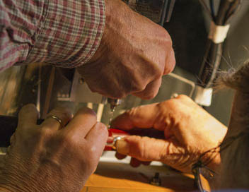

Windward Flutes, owned by Forbes and Yola Christie, has been making and restoring wooden flutes in Nova Scotia since 2004. Prior to this, Forbes was a flutemaker in Boston and Yola ran her own silversmithing business.

As a flutemaking team, they are complementary craftsmen and well matched. Forbes has been making flutes for 20 years and brings machining and tool making skills to the work, and Yola, a silversmith with 30 years of experience, brings a talent for design in metal and a sound knowledge of materials. Windward combines the quality of the Boston flutemaking tradition with Forbes’s and Yola’s passion for the 19th century wooden flute. Their instruments are enjoyed by Celtic, Jazz and Classical musicians.
Forbes’s lifelong fascination with airflow and his RAF background in general engineering and machining were a suitable growth medium for the flutemaker.
Forbes began his flutemaking career at Brannen Brothers Flutemakers in Boston, where he apprenticed with Conrad Marvin. After ten years at Brannen, he moved to V.Q. Powell where he headed the body department, running production and training apprentices. While he was still working for Powell, he and Yola started to collect and restore 19th century wooden flutes, and this led to the inception of their company.
Yola’s early interest in design, tools and materials blossomed during her years at the Rhode Island School of Design, where she was fortunate to study with teachers like Harry Callahan for photography, Tage Frid for wood, and Jack Prip for silver.
Yola worked for several years as a graphic designer for Librairie Hachette in Paris, then moved to Scotland to teach art and design and to pursue further studies in silversmithing. This led to a spell in the magical Orkney Islands to study with David Hodge, Silversmith to the Queen and an old friend of Forbes’s family. It was there that she met Forbes and a year later they married in Scotland.
They spent their first years together in Wales and England, and moved to the United States in 1984 with their three children. Once the kids had flown the coop, Forbes and Yola moved to Canada, and settled in Nova Scotia. Their only regret, looking back, is that they did not begin collecting simple system flutes in the 1970’s, when you could buy one for a song!